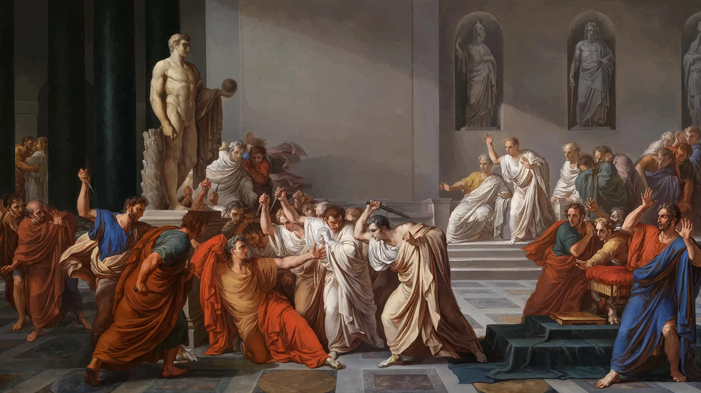

In Shakespeare's Julius Caesar, the tension between fate and free will is turned into a deep tragedy that explores the complex dynamics of power, loyalty, and betrayal. The play’s plot revolves around the political actions that lead to the assassination of Julius Caesar, set against a backdrop of Rome on the brink of transition. Shakespeare gives us insight into the consequences of a single act of betrayal formed from countless clashes of ideology, placing Julius Caesar in the spot of one of the best examinations of the counteractions of power and ambitions.
Julius Caesar does not just revolve around the assassination itself, but the ideological battle between those who believe Caesar’s ambition will lead to tyranny and those who think that his power is necessary for Rome’s stability. The play’s main character, Brutus, is caught between loyalty to his friend Caesar and his duty to Rome. Brutus’s internal struggle caused by his internal flaws represents the conflict of being true to one’s principles versus fulfilling a moral duty to the greater good. His decision to join the conspiracy against Caesar highlights his fatal flaw: choosing between personal and political duties, a theme that resonates through the ages.
The use of rhetoric in storytelling is also a powerful tool in Julius Caesar, and none more so than in Mark Antony’s famous funeral oration. Antony’s speech redirects the existing ideals in the public opinion by appealing to the crowd's emotions. His ability to manipulate the masses demonstrates the fragility of public opinion caused by the masses; as the people have conflicting ideals, only unified by recent pushes towards a specific opinion. His theme of rhetoric as justification is prevalent throughout the play, with characters like Cassius and Brutus also using rhetoric to justify their actions. Shakespeare shows how stored energy can be channeled by the words of those who wield it, making rhetoric as much a tool for destruction as for governance.
Julius Caesar speaks to the timeless nature of power struggles and the frailties of the primal human. In its exploration of hamartia, Julius Caesar delves into the tragic flaws of its characters and the inevitable downfall that results from them. Caesar's hubris, believing himself invincible and above reproach, blinds him to the warnings of those around him, like the soothsayer's "Beware the Ides of March." Similarly, Brutus’s idealism and his tragic misjudgment of loyalty lead him to join the conspiracy, believing he acts for the greater good of Rome, yet failing to see that his actions will bring about chaos. Cassius's envy of Caesar and his manipulation of Brutus reveal his own flaw of ambition, pushing him to orchestrate the assassination. The play shows how these flaws—hubris, idealism, and envy—combine to propel the characters toward their doom, revealing the destructive nature of hamartia and the inevitable consequences of personal failings.
Shakespeare’s Julius Caesar is a profound meditation on power, trust, and betrayal. It forces the audience to confront the consequences of political action and the fragility of alliances. The characters' struggles with their own morals and the weight of their decisions mirror the political and social tensions of any era, making this play as relevant today as it was in Shakespeare’s time. For anyone interested in the intersection of personal and political realms, Julius Caesar offers a compelling study of ambition, betrayal, and the unintended consequences of seeking power.